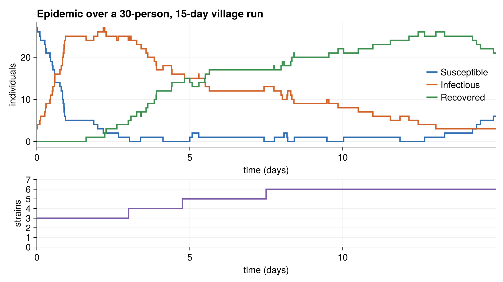

Running the SIR Village Model
The entry point
The hand-written model exposes run_sirvillage, which builds a small village and runs it:
function run_sirvillage(; policy=ChronoSim.NoPolicy())
person_cnt, location_cnt = 10, 10
day_length, days = 1.0, 1.0
rng = Xoshiro(2938423)
physical = Village(person_cnt, location_cnt, day_length, rng)
included_transitions = [InitEvent, Travel, Infect, Recover, Reset, Mutate]
trajectory = TrajectorySave()
sim = SimulationFSM(physical, included_transitions;
rng=rng, observer=trajectory, policy=policy)
stop_condition = (physical, step_idx, event, when) -> when > days
ChronoSim.run(sim, InitEvent(), stop_condition)
return sim.when
endTwo things distinguish this from the simpler models. First, the initializer is an actual event — InitEvent() is passed to ChronoSim.run in place of an initializer function, and it seeds the infection and the founding strains when it fires. Second, Mutate and Reset make the state grow and cycle at runtime, so a run exercises the dict-keyed strain set and the SIRS loop.
using ChronoSimExamples.SIRVillage
SIRVillage.run_sirvillage()Running the larger 30-person, 15-day village from the test and counting S/I/R states after every event gives the epidemic curve below. The infection sweeps the village in the first day, recovery builds up an immune pool, and waning (Reset) plus new strains keep infections circulating; the lower panel tracks the cumulative number of strains as Mutate fires.

A 30-person, 10-location, 15-day run (Xoshiro(2938423)): Susceptible, Infectious, and Recovered counts over time, with the cumulative strain count below.
The derived twin has a matching run_sirvillage_derived() entry point (30 people, 10 locations, 30 days), with no observer or policy attached.
Checking invariants while you run
As with the elevator, invariant checking plugs in through the policy keyword. The tests stack two policies so that a violation carries a replayable prefix:
using ChronoSim: PolicyStack, RecordSkeleton, CheckInvariants
policy = PolicyStack(RecordSkeleton(), CheckInvariants(SIRVillage))
SIRVillage.run_sirvillage(policy=policy)RecordSkeleton is placed before CheckInvariants so that if an invariant fails, the recorded skeleton lets you replay the run up to the failing step.
The test
The test in test/test_sirvillage.jl is a single smoke test, but a pointed one. Its header explains what it guards against:
The model had no smoke test (its "unfinished" state): strains was a fixed-extent ObservedVector whose Mutate push! throws FixedExtentError, so any run long enough to mutate crashed. With strains as a keyed ObservedDict the run must complete and actually fire events (including Mutate, which grows the strain set).
The test builds a 30-person, 10-location village, runs it for fifteen days under the recording-plus-invariants policy stack, and counts events with a custom observer:
event_cnt = Ref(0)
fired = Set{Symbol}()
observer = function (physical, when, event, changed)
event_cnt[] += 1
push!(fired, clock_key(event)[1])
end
policy = PolicyStack(RecordSkeleton(), CheckInvariants(SIRVillage))
sim = SimulationFSM(physical, included; rng=rng, observer=observer, policy=policy)
stop_condition = (p, step_idx, event, when) -> when > days
with_logger(ConsoleLogger(stderr, Logging.Warn)) do
ChronoSim.run(sim, SIRVillage.InitEvent(), stop_condition)
endIts three assertions are the smoke signals:
@test sim.when > 0.0 # the run advanced
@test event_cnt[] > 0 # events actually fired
@test physical.next_strain_id > 2 # a strain was born at runtimeThe last one is the important regression guard: next_strain_id > 2 means a Mutate grew the strain set beyond the founding strain — the exact path that used to throw FixedExtentError before strains became an ObservedDict. Passing the run under CheckInvariants also means every one of the model's invariants held after each of its events.
This is a smoke and regression test, not a statistical validation of the epidemic dynamics. It confirms the machinery runs — movement, infection, recovery, waning, and mutation all fire, and the state stays consistent throughout.